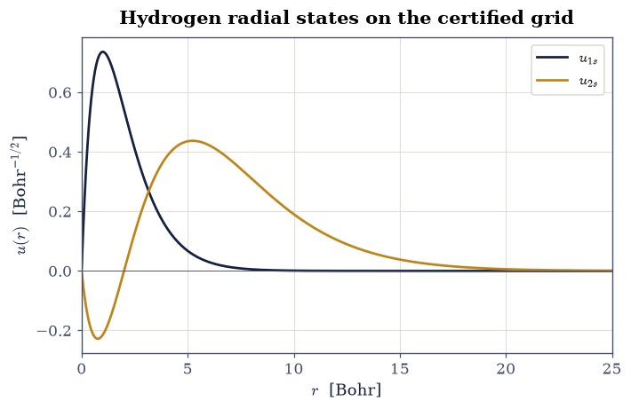
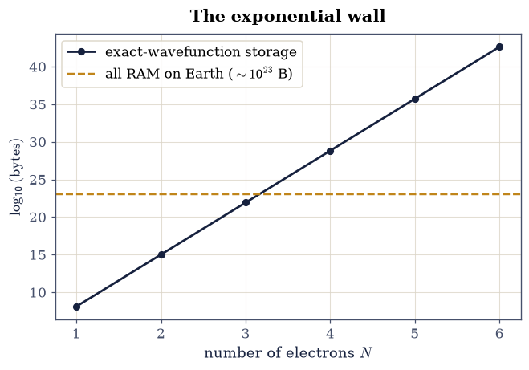
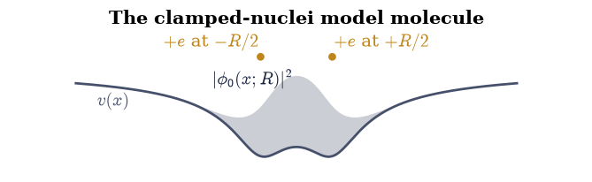
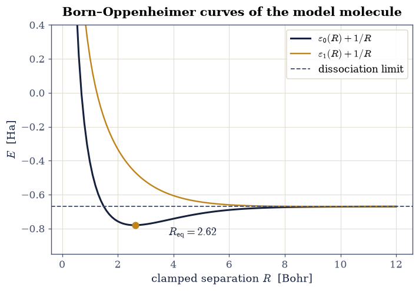
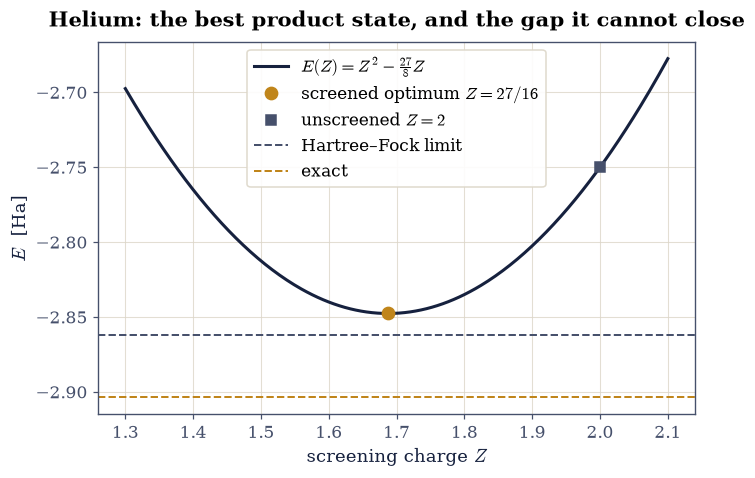

8.1 The Many-Electron Problem#
Notebook overview#
Volume VIII opens with a confession the previous volumes never had to make. Volume VI solved one particle at a time; Volume VII took many particles and let them ignore each other, hiding every interaction inside a chemical potential. But the silicon running this page, the metal in the machine’s frame, the molecules in the reader: all of it is electrons interacting through the Coulomb force, and the honest governing equation is a Schrödinger equation in \(3N\) coordinates that no computer will ever store, let alone solve, for \(N\) beyond a handful. This notebook states that problem precisely and measures why it is hard, because every method in the sixteen notebooks that follow is a strategy for evading a wall we will first run into deliberately.
The plan is concrete. We derive Hartree atomic units and let scipy.constants confirm
that one Hartree is \(27.211\) eV, so every later equation sheds its constants. We
certify the volume’s radial workhorse (the tridiagonal eigensolver of
§6.10, reduced to the
half-line as in §6.16) on the
one atom whose answers are exact. We tabulate the storage cost of the exact
wavefunction and watch it pass the total RAM on Earth at four electrons. We then carry
out the Born–Oppenheimer separation, not as an assertion but as a computation, on a
one-dimensional model molecule whose electronic curve we diagonalize at every clamped
nuclear distance, and we measure the two small numbers (a vibrational-to-electronic
frequency ratio, a non-adiabatic coupling) that make the separation quantitatively
excellent. The notebook closes on helium: a screened-charge variational guess whose
optimal \(Z_{\mathrm{eff}} = 27/16\) arrives in closed form, and whose remaining error
against the exact energy defines the quantity, correlation energy, that Volumes
VIII’s methods will spend the next sixteen notebooks chasing.
Conventions (this notebook and the volume). Hartree atomic units throughout: \(\hbar = m_e = e = 4\pi\varepsilon_0 = 1\), so lengths are in Bohr radii (\(a_0 = 0.529\) Å), energies in Hartree (\(E_h = 27.211\) eV), and the hydrogen ground state sits at exactly \(-1/2\). Grids state their extent and spacing; every eigensolver names its routine. The exercises use
scipy.linalg.eigh_tridiagonalfor one-dimensional and radial problems, exactly the machinery certified in §6.10.How to read the checks. Each exercise ends with a
validatecall against an independent fact: a CODATA constant, an exact eigenvalue, a closed-form optimum, a dissociation limit. A ✓ is strong evidence the computation is right; a ✗ is a prompt to locate the discrepancy (a genuine error, a convention mismatch, or a tolerance), not an automatic verdict.Scope. This notebook states the many-electron problem and its cost; it solves nothing larger than two electrons. The systematic attacks begin in §8.2 (an exactly solvable two-electron laboratory) and §8.3 (Hartree–Fock). Derivations we sketch are carried out in full in Martin, Electronic Structure [Mar04], Ch. 2–3, and Szabo & Ostlund [SO96], Ch. 1–2.
Theory in brief#
The Hamiltonian, and the units that clean it#
For \(N\) electrons at positions \(\mathbf r_i\) and \(M\) nuclei of charge \(Z_k\) at \(\mathbf R_k\), non-relativistic quantum mechanics poses one operator. In SI units it drips with constants; the cure, standard since the earliest atomic calculations (Martin [Mar04], App. A), is to measure mass in electron masses, charge in elementary charges, action in \(\hbar\), and permittivity in \(4\pi\varepsilon_0\). Every combination then collapses to one, and the natural length and energy scales
emerge as the Bohr radius and the Hartree. In these units the full molecular Hamiltonian reads
with \(M_k\) the nuclear masses in electron masses (a proton is \(1836\)). Five terms: electronic kinetic energy, electron–nucleus attraction, electron–electron repulsion, nuclear kinetic energy, nucleus–nucleus repulsion. The third term is the villain of this volume. Without it, Eq. 855 separates into one-electron problems and Volume VI has already solved them; with it, the eigenfunction \(\Psi(\mathbf r_1, \dots, \mathbf r_N)\) couples every coordinate to every other and lives in \(3N\) dimensions.
The wall#
How expensive is it to just store \(\Psi\)? A modest grid of \(200\) points per coordinate needs \(200^{3N}\) complex numbers. The count is worth tabulating rather than waving at, because its slope is the whole story: each additional electron multiplies the cost by \(200^3 = 8\times 10^6\). This exponential growth of Hilbert space, the curse of dimensionality, is why electronic-structure theory exists as a field. Every method from Hartree–Fock (§8.3) to density-functional theory (§8.7) is a scheme for never touching the full \(\Psi\).
Born–Oppenheimer: freeze the nuclei, then let them move#
The first simplification is not about electrons at all. Nuclei are thousands of times heavier than electrons, so their motion is slow and the electrons follow it adiabatically. Formally (Born and Oppenheimer 1927; the modern form is in Martin [Mar04], Ch. 3) one solves the clamped-nuclei electronic problem at every fixed nuclear geometry \(\mathbf R\),
and the electronic eigenvalue \(\varepsilon_0(\mathbf R)\), plus the nuclear repulsion, becomes the potential-energy surface on which the nuclei subsequently move. The neglected terms couple different electronic surfaces \(\phi_n\) through nuclear derivatives \(\partial\phi_n/\partial\mathbf R\), and their size is governed by the mass ratio: the vibrational quantum \(\omega \sim \sqrt{k/\mu}\) is smaller than electronic gaps by roughly \((m_e/\mu)^{1/2} \approx 1/30\) for hydrogen (with \(\mu\) the reduced nuclear mass, \(M_p/2\) for a proton pair), and the direct non-adiabatic matrix elements are smaller still. Exercises 4 and 5 compute the surface and then measure both small numbers on a model where nothing needs to be taken on faith.
The variational principle, and what it cannot reach#
The variational theorem of §6.22 survives unchanged in many-electron space: for any normalized trial state \(\Phi\), \(\langle\Phi|\hat H|\Phi\rangle \ge E_0\). It is the engine of nearly every method in this volume. Its first many-electron outing, helium with a screened hydrogenic product (a calculation older than the Schrödinger equation’s second birthday; Szabo & Ostlund [SO96], §1.3, work the integrals), gives the closed-form energy curve
whose minimum \(Z_{\mathrm{eff}} = 27/16 \approx 1.69\) says each electron sees the nucleus screened by about a third of the other electron’s charge. The minimized energy, \(-2.8477\), misses the exact \(-2.9037\) [PY89]. That gap is not a numerical artifact to be converged away: no product of one-electron orbitals, however optimized, can describe two electrons avoiding each other. The missing physics is electron correlation, and its precise definition (against the Hartree–Fock limit, \(-2.8617\) for helium) arrives in §8.3. Volume VIII is, from here on, the story of that gap.
Setup#
Data and instruments only: the CODATA constants the atomic units are assembled from, the proton–electron mass ratio the Born–Oppenheimer estimate needs, the series palette, the given soft-Coulomb model potential of Eq. 859, and the uniform-grid eigensolver of §6.10 restated in tridiagonal form. Everything this notebook computes you build in the exercises — the derived units, the radial Hamiltonian, the storage table, the Born–Oppenheimer loop, the non-adiabatic coupling, and the helium variational curve.
The Setup below holds this notebook’s data and instruments — nothing you are asked to build. It is collapsed so the building stays yours; expand it whenever you want the details.
Exercise 1 — Atomic units from the constants themselves#
Equation Eq. 854 asserts that the four defining constants of the electron’s world combine into one length and one energy. The assertion deserves a check with real numbers, and running it once, here, is what licenses every later notebook to write equations with no constants at all. It also fixes the conversion factors the volume will use whenever a result must face an experiment quoted in eV or Å.
Part a) Build the Bohr radius \(a_0 = 4\pi\varepsilon_0\hbar^2/(m_e e^2)\) and the
Hartree \(E_h = m_e e^4 / \left[(4\pi\varepsilon_0)^2\hbar^2\right]\) from the
scipy.constants values hbar, m_e, e, and epsilon_0 by direct arithmetic
(products and quotients of the imported floats), and express \(E_h\) in eV by dividing
by scipy.constants.electron_volt. Print both alongside the CODATA reference entries
physical_constants["Bohr radius"] and physical_constants["Hartree energy"].
Part b) Two sanity conversions the volume will lean on: the hydrogen binding
energy \(\tfrac12 E_h\) in eV (the Rydberg, \(13.606\) eV), and room temperature
\(k_BT\) at \(300\) K expressed in Hartree (use scipy.constants.k), the number that
will later say band gaps are enormous compared to thermal energies. Compute both by
the same direct arithmetic.
Bohr radius built = 5.2917721054e-11 m (CODATA 5.2917721054e-11 m)
Hartree built = 4.3597447222e-18 J (CODATA 4.3597447222e-18 J)
Hartree in eV = 27.211386 eV
Rydberg = 13.60569 eV; k_B T at 300 K = 0.000950 Ha
Validation 1 — the derived units meet CODATA#
The built \(a_0\) and \(E_h\) must match the CODATA entries essentially to machine precision (they are defined by the same arithmetic), the Hartree must be \(27.211\) eV, and the Rydberg \(13.606\) eV.
✓ Bohr radius from the defining constants [got 5.29177e-11 vs expected 5.29177e-11 (rtol=1e-09, atol=1e-09)]
✓ Hartree energy from the defining constants [got 4.35974e-18 vs expected 4.35974e-18 (rtol=1e-09, atol=1e-09)]
✓ one Hartree in eV [got 27.2114 vs expected 27.2114 (rtol=1e-06, atol=1e-09)]
✓ the Rydberg in eV [got 13.6057 vs expected 13.6057 (rtol=1e-06, atol=1e-09)]
True
Exercise 2 — Certifying the radial machinery on hydrogen#
The volume’s atoms are spherical, and every radial problem in it reduces (the \(u = rR\) substitution of §6.16) to a one-dimensional Schrödinger equation on the half-line,
which a uniform grid \(r_j = j\,h\) turns into a symmetric tridiagonal eigenproblem (the boundary \(u(0)=0\) is built in by starting the grid at \(r_1 = h\)). Before this machinery computes anything unknown, it must reproduce the one atom whose spectrum is exact: hydrogen, \(v = -1/r\), with \(\varepsilon_n = -1/(2n^2)\) and \(\langle r\rangle_{1s} = 3/2\) in atomic units (§6.17 derived all of this; here it is the certificate for the tool).
Part a) On the radial grid \(r_j = j\,h\) with \(h = 0.005\) and \(r_{\max} = 60\)
(12 000 points), assemble the \(l = 0\) tridiagonal matrix for \(v(r) = -1/r\) (diagonal
\(1/h^2 + v(r_j)\), off-diagonal \(-1/(2h^2)\)) and obtain the two lowest eigenpairs with
scipy.linalg.eigh_tridiagonal (select="i"). Report \(\varepsilon_{1s}\) and
\(\varepsilon_{2s}\) against \(-1/2\) and \(-1/8\). Write this one yourself — the
implementation is the lesson: this assembly is the radial workhorse every atom in the
volume rests on, and the grid that starts at \(r_1 = h\) is what keeps it finite.
Part b) Normalize \(u_{1s}\) by numpy.trapezoid and compute
\(\langle r\rangle = \int r\,u_{1s}^2\,dr\) (again numpy.trapezoid), which must come
out \(3/2\). Plot \(u_{1s}\) and \(u_{2s}\).
eps_1s = -0.499997 Ha (exact -0.5); eps_2s = -0.125000 Ha (exact -0.125)
<r>_1s = 1.500007 Bohr (exact 1.5)

Fig. 751 The certified radial machinery: reduced radial wavefunctions \(u_{1s}(r)\) and \(u_{2s}(r)\) of hydrogen on the uniform grid \(r_j = jh\), \(h = 0.005\) Bohr, computed by the tridiagonal eigensolver. The eigenvalues reproduce the exact \(-1/2\) and \(-1/8\) Hartree to five decimals, certifying the tool the whole volume will reuse.#
Validation 2 — hydrogen is exact#
The grid eigenvalues must match \(-1/2\) and \(-1/8\) Hartree, and the first moment must be \(3/2\) Bohr, all within the \(O(h^2)\) discretization error of the stated grid.
✓ hydrogen 1s energy on the radial grid [got -0.499997 vs expected -0.5 (rtol=0.0001, atol=1e-09)]
✓ hydrogen 2s energy on the radial grid [got -0.125 vs expected -0.125 (rtol=0.0001, atol=1e-09)]
✓ hydrogen <r> in the 1s state [got 1.50001 vs expected 1.5 (rtol=0.0001, atol=1e-09)]
True
Exercise 3 — The wall, measured#
Storing the exact \(\Psi(\mathbf r_1,\dots,\mathbf r_N)\) on a grid of \(200\) points per coordinate costs \(200^{3N}\) complex numbers at 16 bytes each. The claim in the theory section was that this passes planetary resources almost immediately; a claim about numbers should be a table. For scale, the total installed RAM on Earth is of order \(10^{23}\) bytes (a generous estimate: ten billion devices at ten terabytes each).
Part a) Tabulate the storage in bytes for \(N = 1,\dots,6\) electrons (compute
\(16 \times 200^{3N}\) in floating point via numpy powers; at these sizes integers
would overflow C longs, which is itself part of the lesson). Print the table with the
\(N\) at which the cost first exceeds \(10^{23}\) bytes flagged.
Part b) Plot \(\log_{10}(\text{bytes})\) against \(N\) (a matplotlib line with
markers) with a horizontal line at the RAM-on-Earth estimate, and verify by
numpy.polyfit (degree 1) that the slope is \(3\log_{10}200 \approx 6.9\) decades per
electron: the exponential wall as a measured straight line.
N = 1: 1.28e+08 bytes
N = 2: 1.02e+15 bytes
N = 3: 8.19e+21 bytes
N = 4: 6.55e+28 bytes <-- exceeds RAM on Earth
N = 5: 5.24e+35 bytes <-- exceeds RAM on Earth
N = 6: 4.19e+42 bytes <-- exceeds RAM on Earth
measured slope = 6.9031 decades/electron; 3*log10(200) = 6.9031

Fig. 752 The curse of dimensionality as a measured line: bytes needed to store the exact \(N\)-electron wavefunction on a 200-point-per-coordinate grid, against the total installed RAM on Earth (dashed, \(\sim 10^{23}\) bytes). The slope is \(3\log_{10}200 \approx 6.9\) decades per added electron; the wall falls between \(N = 3\) and \(N = 4\).#
Validation 3 — the wall has the predicted slope#
The fitted slope must equal \(3\log_{10}200\) (it is exact arithmetic, so the tolerance is tight), and the crossing of the RAM-on-Earth line must fall between \(N = 3\) and \(N = 4\).
✓ storage slope in decades per electron [got 6.90309 vs expected 6.90309 (rtol=1e-10, atol=1e-09)]
✓ the exact wavefunction passes all RAM on Earth between N = 3 and N = 4 [N=3: 8.2e+21 B, N=4: 6.6e+28 B]
True
Exercise 4 — Born–Oppenheimer, carried out: the electronic curve#
The Born–Oppenheimer recipe of Eq. 856 is usually described; on a one-dimensional model it can simply be done. The model molecule is the soft-Coulomb H\(_2^+\): one electron on the line, two protons clamped at \(\pm R/2\), with the electron–nucleus attraction softened as in the Setup helper,
Diagonalizing \(\hat H_{\mathrm{el}}\) at each clamped \(R\) and adding the bare nuclear repulsion \(1/R\) gives the molecule’s potential-energy curve. Two physical checks are built into its shape. At large \(R\) the electron settles into one well (\(\varepsilon_{\mathrm{1well}} = -0.6698\) for this potential) but still feels the other proton’s tail \(-1/\sqrt{R^2+1} \approx -1/R\), which cancels the nuclear repulsion: \(E(R) \to \varepsilon_{\mathrm{1well}}\), the energy of a neutral atom plus a distant bare proton. And at intermediate \(R\) the shared electron binds the pair into a molecule: a genuine minimum below the dissociation limit.

Fig. 753 The clamped-nuclei model molecule of Eq. 859: two protons (amber) fixed at \(x = \pm R/2\) on the line, one electron (ink) delocalized between them in the double soft-Coulomb well \(v(x)\) (grey curve, drawn for \(R = 2.6\) Bohr). The Born–Oppenheimer electronic problem is solved at each fixed \(R\).#
Part a) On the grid \(x \in [-20, 20]\) with 2001 points, compute the two lowest
electronic eigenvalues \(\varepsilon_0(R), \varepsilon_1(R)\) of
Eq. 859 with the Setup helper grid_levels (which wraps
scipy.linalg.eigh_tridiagonal) at each of 120 clamped separations
\(R \in [0.2, 12]\), and form \(E(R) = \varepsilon_0(R) + 1/R\). Write this one
yourself — the implementation is the lesson: this loop, one diagonalization per
clamped geometry, is the Born–Oppenheimer approximation of Eq. 856, and
every quantum-chemistry package spends its life inside it.
Part b) Locate the equilibrium bond length: the numpy.argmin of \(E(R)\), refined
by a degree-2 numpy.polyfit through the seven surrounding points (vertex of the
parabola). Report \(R_{\mathrm{eq}}\) and the binding energy
\(E(R_{\mathrm{eq}}) - \varepsilon_{\mathrm{1well}}\), with
\(\varepsilon_{\mathrm{1well}}\) computed on the same grid from the single-well
potential.
Part c) Plot \(E(R)\) with the dissociation asymptote and both electronic surfaces \(\varepsilon_{0,1}(R) + 1/R\): the figure every quantum-chemistry paper draws, here computed from scratch.
eps_1well = -0.669780 Ha
R_eq = 2.6225 Bohr; E(R_eq) = -0.78037 Ha; binding = -0.11059 Ha

Fig. 754 The Born–Oppenheimer potential-energy curves of the soft-Coulomb H\(_2^+\) model: ground surface \(E(R) = \varepsilon_0(R) + 1/R\) (ink) with its minimum at \(R_{\mathrm{eq}} = 2.62\) Bohr, first excited surface (amber), and the dissociation limit \(\varepsilon_{\mathrm{1well}} = -0.670\) Ha (dashed): at large \(R\) the other proton’s attraction cancels the nuclear repulsion exactly, and the molecule becomes atom plus distant proton.#
Validation 4 — a bound molecule that dissociates correctly#
Three facts of the computed surface: the parabola-refined equilibrium bond sits at \(R_{\mathrm{eq}} = 2.62\) Bohr with binding \(-0.111\) Ha (the values measured on this exact grid), and the curve at \(R = 12\) has already returned to the dissociation limit to better than a percent of the well depth: the large-\(R\) cancellation between nuclear repulsion and the second proton’s attraction, working.
✓ equilibrium bond length of the model molecule [got 2.6225 vs expected 2.62 (rtol=0.01, atol=1e-09)]
✓ binding energy below dissociation [got -0.110592 vs expected -0.1106 (rtol=0.01, atol=1e-09)]
✓ E(R = 12) has reached the dissociation limit [got -0.670396 vs expected -0.66978 (rtol=0, atol=0.0011)]
True
Exercise 5 — Why the separation works: two small numbers#
The Born–Oppenheimer approximation is not an act of faith; it is controlled by measurable ratios, and this model is small enough to measure both. First the scale separation: the nuclei vibrate in the well of Fig. 754 with frequency \(\omega = \sqrt{k/\mu}\), where \(k = E''(R_{\mathrm{eq}})\) and \(\mu = M_p/2 = 918\) electron masses is the reduced mass of the proton pair, while the electron’s characteristic energy is the gap \(\Delta\varepsilon = \varepsilon_1 - \varepsilon_0\). Their ratio should be of order \((m_e/\mu)^{1/2} = (2m_e/M_p)^{1/2} \approx 0.033\): nuclear timescales thirty times slower. Second, the direct coupling: the terms Born–Oppenheimer discards involve the response of the electronic state to nuclear displacement, \(\partial\phi_0/\partial R\), and their energy scale
(the diagonal second-order coupling; Martin [Mar04], Ch. 3, assembles the full matrix) should be tiny against the gap.
Part a) The curvature \(k = 2c_2\) is already in hand from the Exercise 4 parabola fit. Compute \(\omega = \sqrt{k/\mu}\) with \(\mu = M_p/2\) from the imported proton–electron mass ratio, the gap \(\Delta\varepsilon\) at the grid point nearest \(R_{\mathrm{eq}}\), and the ratio \(\omega/\Delta\varepsilon\).
Part b) Compute \(\partial\phi_0/\partial R\) at \(R_{\mathrm{eq}}\) by the central
difference of the normalized ground states at \(R_{\mathrm{eq}} \pm 10^{-3}\) (align
their signs via the numpy.dot overlap before differencing: eigenvectors carry an
arbitrary sign), assemble Eq. 860 with a numpy.dot and the grid
spacing, and report \(\delta E_{\mathrm{nac}}/\Delta\varepsilon\).
k = 0.0889 Ha/Bohr^2; omega_vib = 0.00984 Ha
electronic gap = 0.3190 Ha; omega/gap = 0.0308 (sqrt(m_e/mu) = 0.0330)
delta E_nac = 2.175e-05 Ha; relative to the gap = 6.82e-05
Validation 5 — the separation is quantitatively excellent#
The scale ratio must land near the mass-ratio prediction (within a factor accounting for the well’s stiffness), and the direct coupling must be smaller than the electronic gap by better than four orders of magnitude: the two measured reasons the rest of this volume may clamp its nuclei with a clear conscience.
✓ vibrational-to-electronic scale ratio [got 0.0308457 vs expected 0.031 (rtol=0.1, atol=1e-09)]
✓ the discarded non-adiabatic coupling is negligible against the gap [ratio = 6.82e-05 (measured 6.8e-05 on this grid)]
True
Exercise 6 — Helium, and the gap with a name#
One last preparation, and the volume’s antagonist steps on stage. Helium is the smallest system where electrons must share space, and the oldest quantitative attack on it is the screened product trial state \(\Phi_Z(\mathbf r_1, \mathbf r_2) = \tfrac{Z^3}{\pi} e^{-Z r_1} e^{-Z r_2}\): both electrons in a hydrogenic \(1s\) orbital of adjustable charge \(Z\). The three expectation values are classic closed forms (kinetic \(Z^2\), nuclear attraction \(-4Z\) for the true charge \(2\), and the electron–electron repulsion \(\tfrac58 Z\); Szabo & Ostlund [SO96], §1.3, carry out the integrals), which sum to Eq. 857, \(E(Z) = Z^2 - \tfrac{27}{8}Z\). The variational principle of §6.22 guarantees every value of this curve lies above the true ground energy; minimizing over \(Z\) gives the best the product form can do.
Part a) Minimize \(E(Z)\) of Eq. 857 with
scipy.optimize.minimize_scalar (method="bounded" on \(Z \in [1, 2]\)) and confirm
the closed-form optimum \(Z_{\mathrm{eff}} = 27/16\) by setting \(E'(Z) = 0\) by hand.
Report \(E(Z_{\mathrm{eff}}) = -(27/16)^2 = -2.84766\) Ha.
Part b) Compare with the ladder of helium energies: the naive unscreened guess \(E(Z{=}2) = -2.75\), the screened optimum \(-2.84766\), the Hartree–Fock limit \(-2.8617\) (the best any product state will achieve, computed in §8.3), and the exact non-relativistic \(-2.90372\) [PY89]. Plot \(E(Z)\) with all four marked. The distance from the Hartree–Fock limit to the exact energy, \(-0.0420\) Ha, is the correlation energy of helium — quote it in eV too, using the Hartree-to-eV factor certified in Exercise 1: the part of the physics no one-electron picture can hold, and the quantity Volume VIII’s remaining notebooks are built to capture.
minimize_scalar: Z = 1.68750000; closed form 27/16 = 1.6875
E(Z_eff) = -2.847656 Ha
ladder: Z=2 -2.75000 > screened -2.84766 > HF -2.8617 > exact -2.90372
correlation energy of helium = -0.0420 Ha = -1.143 eV

Fig. 755 The variational energy \(E(Z) = Z^2 - \tfrac{27}{8}Z\) of the screened-product trial state for helium (ink curve), its minimum at \(Z_{\mathrm{eff}} = 27/16\) (amber point, \(-2.848\) Ha), the unscreened \(Z = 2\) guess, the Hartree–Fock limit \(-2.862\) Ha (grey dashed), and the exact energy \(-2.904\) Ha (amber dashed). The gap between the last two is the correlation energy, \(-0.042\) Ha: the quantity this volume exists to compute.#
Validation 6 — the optimum, the bound, and the gap#
The numerical minimum must sit at \(27/16\) with energy \(-(27/16)^2\); every point of the variational curve must lie above the exact energy (the variational bound); and the correlation energy must come out \(-0.042\) Ha.
✓ the screened optimum Z_eff [got 1.6875 vs expected 1.6875 (rtol=1e-05, atol=1e-09)]
✓ E at the optimum equals -(27/16)^2 [got -2.84766 vs expected -2.84766 (rtol=1e-12, atol=1e-09)]
✓ the variational bound holds along the whole curve [min over the curve = -2.84766 > exact -2.90372]
✓ the correlation energy of helium [got -0.04202 vs expected -0.042 (rtol=0.02, atol=1e-09)]
True
With your assistant
The Born–Oppenheimer loop of Exercise 4 (a diagonalization per clamped geometry) is exactly the kind of structured, repetitive code an assistant generates well. Have it write a version that also returns the third electronic surface, then run the check that is yours alone: at large \(R\) the first and second surfaces must become degenerate (the electron in the left or right well, split only by tunnelling), so \(\varepsilon_1 - \varepsilon_0\) at \(R = 12\) must be smaller than \(10^{-3}\) Ha while \(\varepsilon_2\) stays well separated. The check is yours.
Notebook summary#
The problem is posed, and its difficulty is now a set of measured numbers rather than a mood. Atomic units, built from the CODATA constants by direct arithmetic, reproduce \(a_0\) and \(E_h = 27.2114\) eV to ten digits and strip every equation of the volume to its physics. The radial tridiagonal machinery reproduced hydrogen’s \(-1/2\) and \(-1/8\) Ha and \(\langle r\rangle = 3/2\) on the stated grid, so its later outputs on helium and beryllium can be trusted. The exact wavefunction’s storage cost climbs \(6.9\) decades per electron and passes the RAM of the entire planet between \(N = 3\) and \(N = 4\): the exact route is closed, permanently. The Born–Oppenheimer separation, executed on a diagonalizable model molecule, produced a bound curve (\(R_{\mathrm{eq}} = 2.62\) Bohr, binding \(-0.111\) Ha) whose dissociation limit vindicated the clamped-nuclei bookkeeping, and the separation’s two error scales were measured at \(\omega/\Delta\varepsilon = 0.031\) and \(\delta E_{\mathrm{nac}}/\Delta\varepsilon = 7\times10^{-5}\). Helium’s screened product state minimized in closed form to \(Z_{\mathrm{eff}} = 27/16\) and \(E = -2.8477\) Ha, above the exact \(-2.9037\) by a gap no product state can close; the distance from the Hartree–Fock limit, \(-0.042\) Ha, received its name: correlation.
Outlook#
The wall says the exact problem is unreachable in general, but not always: for two electrons in one dimension the full wavefunction fits comfortably in memory. §8.2 builds exactly that system and solves it exactly, giving the volume a referee every approximation must face.
The screened-charge idea (each electron in an effective one-electron potential shaped by the others) is not a trick but a program. Made self-consistent, it becomes Hartree–Fock (§8.3); made exact in a way no one expected, it becomes Kohn–Sham density-functional theory (§8.7).
The Born–Oppenheimer surfaces computed here for one electron become, for many, the central objects of chemistry: reaction barriers, vibrational spectra, molecular dynamics. The companion MMM course drives production codes across exactly such surfaces; this volume builds the machinery that computes them.